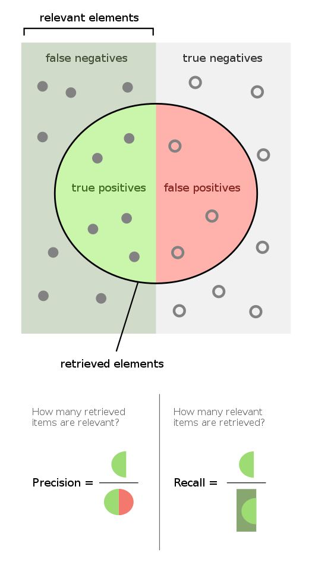

<!doctype html>
<html lang="de">
  <head>
    <meta charset="utf-8">

		<title>Stabi Tool Tuesday</title>

		<meta name="description" content="A colaborative learning space for all things DH">
		<meta name="author" content="Roman Kuhn">

		<meta name="apple-mobile-web-app-capable" content="yes">
		<meta name="apple-mobile-web-app-status-bar-style" content="black-translucent">

		<meta name="viewport" content="width=device-width, initial-scale=1.0, maximum-scale=1.0, user-scalable=no, minimal-ui">

    <link rel="stylesheet" href="dist/reveal.css">
    <link rel="stylesheet" href="dist/theme/white.css">
  </head>
  <body>
    <div class="reveal">
      <div class="slides">
         <section data-markdown data-separator="^\n---\n" data-separator-vertical="^\n--\n" data-separator-vertical="^\n--\n" data-charset="utf-8">
          <script type="text/template">
          <!--content goes here-->

          ## Stabi Tool Tuesday
          ### 4 - NER <!-- .element: class="fragment" -->
          09.12.2025

          ---
          ### Tool Tuesday
          Ein kollaborativer Raum, um DH-Methoden und tools zu diskutieren... auszuprobieren... zu experimentieren...

          ...manchmal auch zu scheitern?

          --

          ### no code
          (für den Moment jedenfalls)

          --

          ### ~no code~
          ### some code
         

          --
          
          Folien und weitere Materialien finden sich hier: https://github.com/StabiBerlin/tooltuesday

          Die heutigen Folien hier: https://stabiberlin.github.io/tooltuesday/slides/NER.html
          Kontakt: roman.kuhn@sbb.spk-berlin.de

---
### Überblick über die Reihe
jeden zweiten Dienstag

im Moment sechs Termine fest geplant:
* Datenquellen und Schnittstellen
* Datenstrukturierung mit OpenRefine
* OCR/HTR
* **Named Entity Recognition (NER)**
* Topic Modeling
* Netzwerkvisualierung (Gephi)


--
Orientiert an einer (prototypischen) DH-'pipeline'

Forschungsidee/Forschungsfrage

&#8618; Daten suchen (und finden); Daten generieren

&#8618; Daten aufbereiten

&#8618; Daten auswerten, transformieren

&#8618; Ergebnisse (und neue Daten) publizieren/visualisieren

--
Weitere Termine/Themen bei Bedarf

Bring your own data


---
### NER - Named Entity Recognition

Was sind Named Entities? <!-- .element: class="fragment" -->

Übliche Entities: PER - ORG - LOC<!-- .element: class="fragment" -->

Mitunter auch: (Geld-)Beträge, Prozentwerte, Zeitangaben, E-Mail, Telefonnummer, Social-Media-Handle, etc. pp.<!-- .element: class="fragment" -->

In der Regel ohne 'nesting': Freie Universität Berlin -- ORG (aber "Berlin" nicht zusätzlich als LOC)<!-- .element: class="fragment" -->

Weitere Entity-Typen könnten definiert und Modelle darauf trainiert werden<!-- .element: class="fragment" -->


---

### Verfahren

Regelbasiert vs. statistisch (machine learning)

---

### Überprüfung der Ergebnisse

Abgleich mit Gold standard/ground truth

Häufig verwendeter Wert: F-Score (Harmonisches Mittel aus Precision und Recall)

--




---

### Stanford Named Entity Recognizer
https://nlp.stanford.edu/software/CRF-NER.shtml

Deutsches Modell:
[Dropbox](https://www.dropbox.com/s/mfnj349ezc1y8x1/german.conll.germeval2014.hgc_175m_600.crf.ser.gz?dl=0)


https://www.java.com/de/download/manual.jsp 

(vgl.: Mareike Schumacher (2019): „Named Entity Recognition mit dem Stanford Named Entity Recognizer“. In: forTEXT. Literatur digital erforschen. [URL](https://fortext.net/routinen/lerneinheiten/named-entity-recognition-mit-dem-stanford-named-entity-recognizer))

--

Fontane: [Wanderungen durch die Mark Brandenburg](https://www.deutschestextarchiv.de/book/show/fontane_brandenburg01_1862)


--

Exportformat


--

### Training

Kapitel 1 als Trainingsdaten Kap. 2 als Evaluation

(im 'echten Leben' wäre dieses Trainingsset natürlich zu klein!)


https://nlp.stanford.edu/software/crf-faq.html

--

### Tokenization

<pre><code data-trim data-noescape>
  <xmp>java -cp stanford-ner.jar edu.stanford.nlp.process.PTBTokenizer ..\fontane_brandenburg01_1862_ch1.txt > ..\fontane_brandenburg01_1862_ch1.tok</xmp>
    </code></pre>

--

### Erstellen von Ground Truth


--

### Properties
<pre><code data-trim data-noescape>
  <xmp>trainFile = ../fontane_brandenburg01_1862_ch1.tsv
    serializeTo = ner-modelFontane.ser.gz
    map = word=0,answer=1
    useClassFeature=true
    useWord=true
    useNGrams=true
    noMidNGrams=true
    maxNGramLeng=6
    usePrev=true
    useNext=true
    useSequences=true
    usePrevSequences=true
    maxLeft=1
    useTypeSeqs=true
    useTypeSeqs2=true
    useTypeySequences=true
    wordShape=chris2useLC
    useDisjunctive=true</xmp>
    </code></pre>


 [Liste verfügbarer properties](https://nlp.stanford.edu/nlp/javadoc/javanlp/edu/stanford/nlp/ie/NERFeatureFactory.html)

--

### Modell tranieren
<pre><code data-trim data-noescape>
  <xmp>java -cp stanford-ner.jar edu.stanford.nlp.ie.crf.CRFClassifier -prop ../Fontane.prop</xmp>
    </code></pre>

--

### Trainingsdaten vorbereiten (lassen)

<pre><code data-trim data-noescape>
  <xmp>java -mx600m -cp stanford-ner.jar edu.stanford.nlp.ie.crf.CRFClassifier -loadClassifier classifiers/english.all.3class.distsim.crf.ser.gz -outputFormat tsv 2 -textFile sample.txt > sample.tsv</xmp>
    </code></pre>

---

### Alternativer Use-case

Gender-Klassifizierung in Erzähltexten:

https://zenodo.org/records/5555952


---

### spaCy

https://spacy.io/


Modelle für NER in diversen Sprachen; unterschiedliche Größen

--

### Notebook 
(basierend auf: Mattingly, William. [Introduction to Named Entity Recognition](https://ner.pythonhumanities.com/intro.html), 2021 (2nd ed.))

[](https://mybinder.org/v2/gh/StabiBerlin/tooltuesday/HEAD?labpath=binder%2Fner.ipynb)

--

Konfigurationsdatei für Modelltraining
https://spacy.io/usage/training


--


---

## Transformer-basiert

[Modell (xlm roberta)](https://huggingface.co/FacebookAI/xlm-roberta-large-finetuned-conll03-german)

[Notebook](https://github.com/StabiBerlin/tooltuesday/blob/main/binder/hf_transformer_ner.ipynb)

<small>Code weitgehend generiert von ChatGPT 5.1</small>


---
### Oder doch mit LLMs?


<small>Vgl. Hiltmann, Torsten, et al. (2025), "NER4all or Context Is All You Need: Using LLMs for Low-Effort, High-Performance NER on Historical Texts. A Humanities Informed Approach", preprint, doi:10.48550/arXiv.2502.04351</small>

---

## Danke für die Aufmerksamkeit

13.01.2026: Topic Modeling


</section>
         
        </script>
        
      </div></div></body>
    </div>
    <script src="raphael-min.js"><
      <script src="flowchart-latest.js"></script>
    <script src="dist/reveal.js"></script>
    <script src="plugin/markdown/markdown.js"></script>
    
    <script>
      Reveal.initialize({
    plugins: [ RevealMarkdown ]
  });
    </script>
    

  </body>
</html>